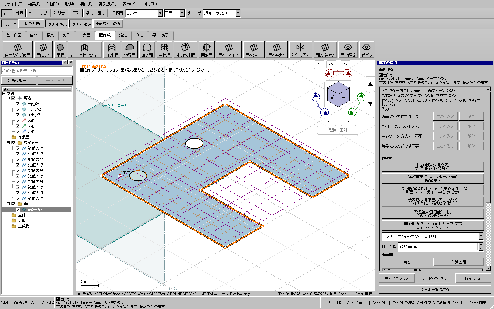
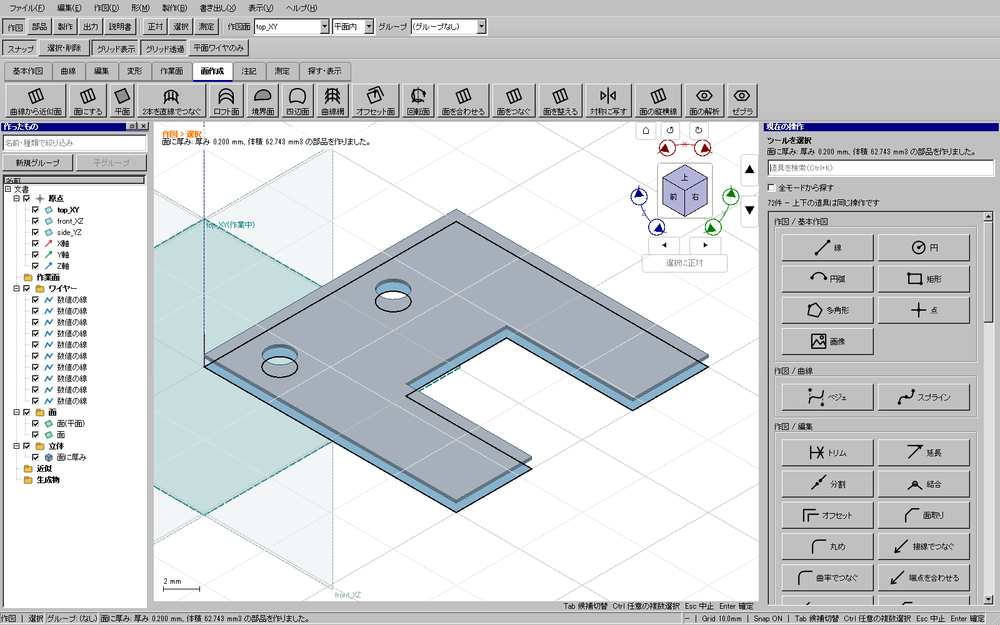
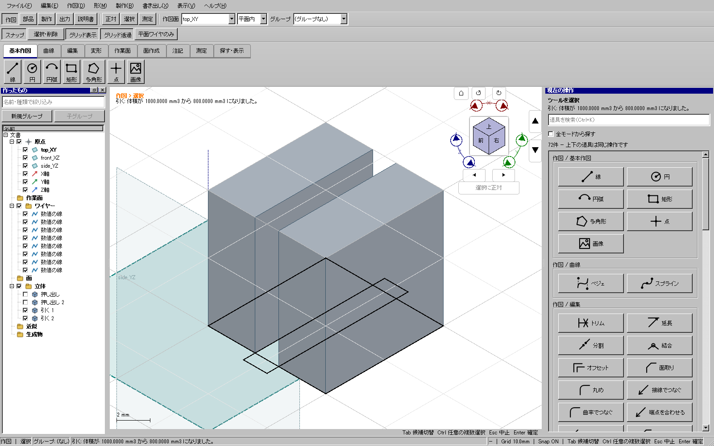
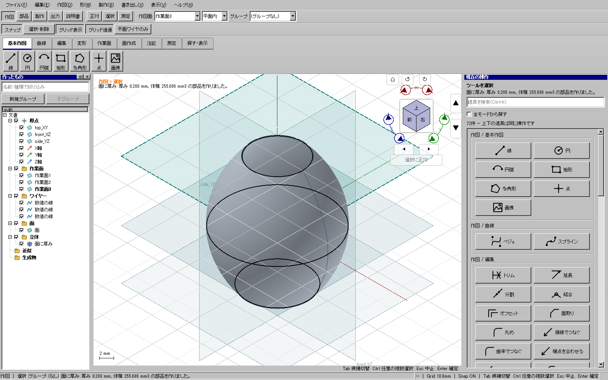
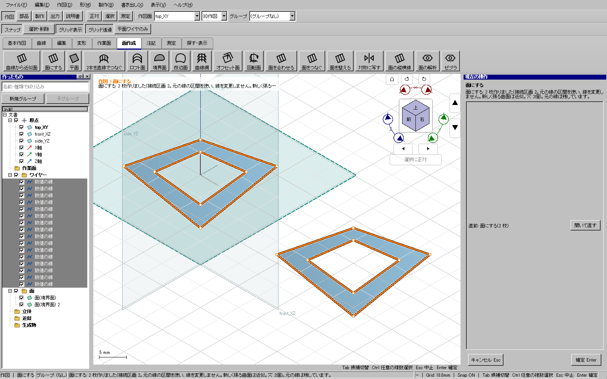
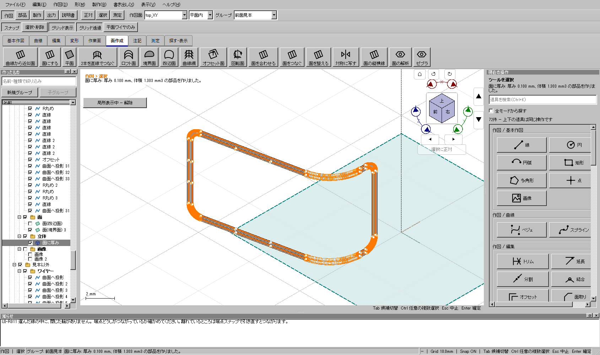

2026-11-04。鉄道模型に加え、装甲のような凹形状、関節・丸い外装、多穴の板、三次元の穴付き曲面を対象に調査しました。用途専用の道具は増やさず、線・輪郭・面・厚み・部品という共通操作で確認しています。
全体・配布版の検証が完了しました。製品ソースadcb417b5。
Windows最新版をダウンロード ／
このPCの検証済みCADを起動。
| 再現した問題 | 修正 | 保持するもの |
|---|---|---|
| 短い辺や細い輪郭を、端点の隙間やT字交差と誤認 | 正確な接続と、選択・隙間補正の距離を分離 | 元の座標・短辺・UUID。隙間を接続済みとは誤判定しない |
| 三次曲線の内部自己交差・折返しを見逃す | ベジェ区間の解析で検出して理由付きで拒否 | 元曲線を勝手に分割・変形しない |
| 面をオフセットすると穴と切り欠きが埋まる | 矩形へ張り直さず、実際の面の境界を保ってオフセット。距離欄を通常UIに接続 | 外形・穴・切り欠き・向き。元面は残す |
| 多穴押し出しの穴側面の識別が重複し、押出先の輪郭から穴が落ちる | 穴の側面まで由来を保持し、押出先にも全輪郭を出す | 穴・体積・安定した面の識別 |
| 複数相手の引き算が、無関係な相手1個で全取消 | 無変更の相手は飛ばし、有効な演算を継続 | 本当の計算失敗は成功扱いしない |
| 分離する切断結果を1個の部品として保存 | 新しい切断は連結したソリッドごとに別部品へ。旧単一出力ファイルも形を失わず再構築 | 入力部品・Undo/Redo・下流の参照 |
| 離れた複数の穴付き曲面を同時に作ると穴の所属が崩れる | 独立した輪郭群ごとに穴と入れ子を分類 | 各輪郭・島・別の面 |
| 選択した製作部材のSVG/DXF/PDFに非選択部材まで含まれる | モデルUUIDと一時型紙の所有部材で絞る | 原寸・ページ上の位置・穴・折り線・切れ目。元の全体型紙は変更しない |
以下の画像はすべて実CAD画面です。追加した5例では、座標欄へのキー入力と作成ボタン、3Dビューのクリックを通して形状を作りました。試験用に文書へ完成形状を直接挿入した結果ではありません。保存形式互換の試験だけは、作成済み文書から旧出力構造のfixtureを別途用意しています。


実際に隙間がある場合は、赤い下見と右ペインの距離を確認します。既存の隙間補正は、表示された案内どおりEnterで補正してから面を作ります。端点を動かしたくない箇所は「そのまま」を指定してください。判定だけで元の線を移動することはありません。


平面に収まらない閉じた輪郭と、その内側の閉じた輪郭を選び「面にする」を使用します。この例では、離れた2組の鞍型輪郭を16本の3D直線から作り、それぞれ穴を残して面を作りました。形の基準となる元面がある場合は、その元面を使用する下見を確認します。輪郭だけから任意の内部形状が一意に決まるわけではありません。


形状だけでなく、選択前に道具を開く経路、選んでから道具を開く経路、候補の切替、確定・取消、取り消し・やり直し、保存後の再構築を確認対象にしています。画面試験は、パネルの配置が更新された後にクリック位置を求め、押した対象のUUIDと選択結果を照合します。
初回の全体検証では、診断コード3件の登録漏れと、追加した丸い外装の操作試験1件が失敗しました。後者は画面を表示しない条件で単独再現し、試験が配置変更前の座標をクリックしていたことを記録から特定しました。試験操作を補正した後、表示あり・なしの両方で追加5例を再実行しています。初回の失敗記録は残し、新しい実行IDで全体を検証します。
| 範囲 | 確認の意味 |
|---|---|
| コア試験 | 短辺、凹形状、多穴・島、三次曲線内部交差、円筒の継ぎ目、球面、穴の側面の由来、Booleanの連結性・無変更相手、型紙選択を検査。 |
| 通常UI | 追加5形状は表示中の座標欄と作成ボタン・3Dクリックから作成。全体UI試験は単体・操作連続・保存・出力などの既存ケースも含む。すべてが人の操作だけで準備されたfixtureという意味ではない。追加入力はQtイベントを使用し、一部の選択・確定と型紙出力は共通controller・画面接続APIを通している。OSマウスによる手作業の全工程試験とは区別する。 |
| 任意形状 | 無限にある全形状の成功保証ではありません。自己交差・非連結な足し算・成立しない厚み・基準の決まらない曲面などは、勝手に形を変えず拒否や追加入力が必要です。 |
| 既知のSTEP制限 | 旧来の一部C0曲面を厚み付けした立体は、STEP再読込で元形状を保てず拒否されます。今回の丸いロフト外装とは別の制限です。厳密検査を緩めて出せたことにはせず、該当形状ではSTL・独立KCDまたは検証済み製作近似のSTEPを使用します。 |
| 工作 | 実寸と穴・部材境界の出力を検査。実際の印刷・材料の曲げ・3Dプリンタでの造形を行ったという意味ではありません。材料・造形方式に応じた肉厚や隙間の調整は必要です。 |
旧版が1個の出力へ保存した分離切断は、既存の参照を壊さず形状を復元する互換処理です。旧ファイル内の出力構造を自動的に書き換える移行ではありません。新しく作成する分離切断は個別部品になります。入力の変更で分離部品数が変わり、保存済み出力との対応が失われる場合は再生成を止めて知らせます。
OS入力による追加確認では、検証済み配布版の新規ウィンドウの起動とUI Automationによる操作項目の読み取りまで確認しました。画面取得は FrameArrived timed out / window capture timed out、円ボタンの操作は coordinate input geometry is unavailable となり、復帰操作後も画面取得できませんでした。この追加経路で形状を作成できたとは記録しません。上記の形状作成・選択・保存の成功は、実CADのQt入力イベントと画面接続APIを通した結果です。
Windows CTest195件（skip 0）、開発版・配布版UI各664件、旧CAD自己試験、配布版通常起動が成功。
配布版で追加5形状・型紙選択1経路・添付115の3D選択1経路も成功しました。
追加5形状と添付モデルはキャッシュ先を通常ファイルにしてキャッシュ保存・読込を利用不能にし、
workerログでそれぞれ6回・2回のcache miss、hit 0を確認しています。
全体証拠 ／
追加形状 ／
添付モデル。
添付コピーSHA256: f472858638de8413d47da0395e41b7655ca08c55bf3cfc2f256acf86946b1dca。
公開ZIP SHA256: e3039de11388b84882dfdbca501feb4d68ce77e763350e1ed12ee220e1625760。GitHub上のタグ・サイズ・digestを照合済みです。